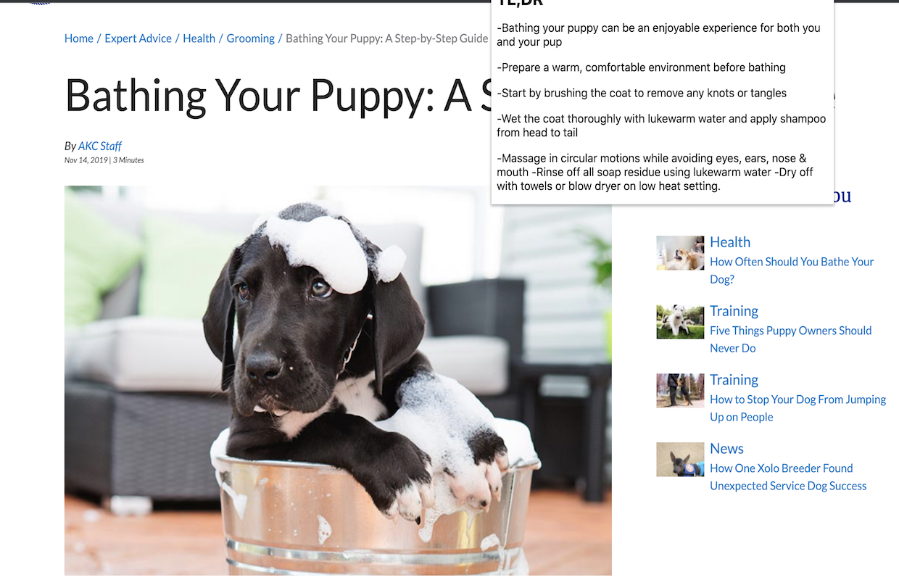
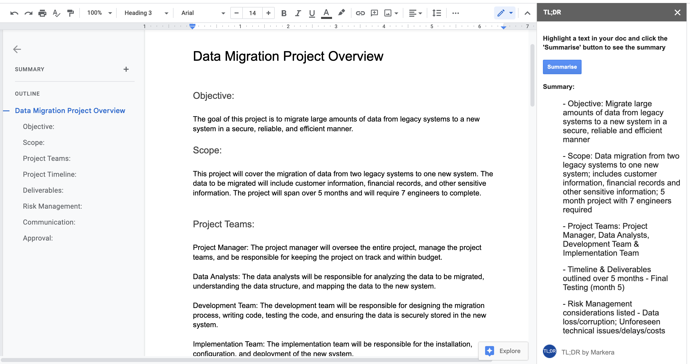

|
Content Summariser Utilities
|
Chrome Browser Extension
Boost your productivity with the TL;DR browser extension for Chrome that helps you to summarize web pages into
concise, easy-to-read content. With our plugin, you can quickly and easily get the key points of an article or
webpage, saving you time and effort. Whether you're trying to stay informed about the latest news or just want to
get through a long article more efficiently, our plugin has got you covered.
Features & Benefits
- Summarize web pages with just one click: Simply click on the extension icon to generate a summary of the
webpage you're currently viewing.
- Save time: No more wading through long, tedious articles. With our plugin, you can get the key points of a
webpage in just a few seconds.
- Stay informed: Stay up-to-date on the latest news and trends by quickly and easily digesting the key points of
multiple articles.
- Improve productivity: Spend less time reading and more time getting things done. Our plugin helps you to
quickly and efficiently consume information, freeing up your time for other tasks.

Easy Usage
- Install the chrome browser extension
- Pin it to your browser for convenient access
- Visit a website of interest and click on the extension for a summary of the page
Google Workspace Editor Add-on
Introducing the TL;DR editor add-on for Google Workspace that helps you quickly summarise your documents. This
add-on will take all the highlighted text from your document and summarise it into a concise TL;DR summary. This
allows you to quickly skim through all your documents and get the main ideas, saving you time and energy.
Features
- Summarises all your highlighted text into a concise TL;DR summary
- Saves you time and energy
- Compatible with Google Workspace

Usage
- Highlight text to summarise
- Hit the 'Summarise' button
- Your summary will be available in the add-on panel
By using this add-on, you agree to the Terms of Service and Privacy
Policy.
Consider supporting this product by making a donation today
Get Support